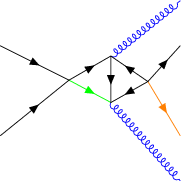

TikZ-Feynman
[1]:
from pyfeyn2.feynmandiagram import FeynmanDiagram, Leg, Propagator, Vertex, PDG
from pyfeyn2.render.latex.tikzfeynman import TikzFeynmanRender
from pyfeyn2.auto.position import feynman_adjust_points
import pyfeyn2
print(pyfeyn2.__version__)
2.4.1.36
Simple Case
We set the positions of all vertices here.
[2]:
v1 = Vertex("v1").with_xy(-1, 0).with_shape("blob")
v2 = Vertex("v2").with_xy(1, 0).with_style("symbol : dot")
fd = FeynmanDiagram().add(
v1,v2,
Propagator(name="g").connect(v1, v2),
Leg(name="g").with_target(v1).with_xy(-2, 1).with_incoming(),
Leg(name="g").with_target(v1).with_xy(-2, -1).with_incoming().with_class("notred"),
Leg(name="g").with_target(v2).with_xy(2, 1).with_outgoing().with_class("red"),
Leg("myid1",name="g").with_target(v2).with_xy(2, -1).with_outgoing().with_style_property("bend-direction","right")
)
/tmp/ipykernel_10757/1904706615.py:1: DeprecatedWarning: __init__ is deprecated as of 2.2.6.
v1 = Vertex("v1").with_xy(-1, 0).with_shape("blob")
/tmp/ipykernel_10757/1904706615.py:2: DeprecatedWarning: __init__ is deprecated as of 2.2.6.
v2 = Vertex("v2").with_xy(1, 0).with_style("symbol : dot")
/tmp/ipykernel_10757/1904706615.py:4: DeprecatedWarning: __init__ is deprecated as of 2.2.6.
fd = FeynmanDiagram().add(
/tmp/ipykernel_10757/1904706615.py:6: DeprecatedWarning: __init__ is deprecated as of 2.2.6.
Propagator(name="g").connect(v1, v2),
/tmp/ipykernel_10757/1904706615.py:7: DeprecatedWarning: __init__ is deprecated as of 2.2.6.
Leg(name="g").with_target(v1).with_xy(-2, 1).with_incoming(),
/tmp/ipykernel_10757/1904706615.py:8: DeprecatedWarning: __init__ is deprecated as of 2.2.6.
Leg(name="g").with_target(v1).with_xy(-2, -1).with_incoming().with_class("notred"),
/tmp/ipykernel_10757/1904706615.py:9: DeprecatedWarning: __init__ is deprecated as of 2.2.6.
Leg(name="g").with_target(v2).with_xy(2, 1).with_outgoing().with_class("red"),
/tmp/ipykernel_10757/1904706615.py:10: DeprecatedWarning: __init__ is deprecated as of 2.2.6.
Leg("myid1",name="g").with_target(v2).with_xy(2, -1).with_outgoing().with_style_property("bend-direction","right")
Style
[3]:
fd = fd.with_rule("""
* {
bend-direction: left;
color: green;
}
""")
[4]:
print(fd)
FeynmanDiagram(id='FeynmanDiagram8', style=cssutils.css.CSSStyleDeclaration(cssText=''), clazz=None, propagators=[Propagator(id='Propagator9', pdgid=21, name='g', type='gluon', particle=<Particle: name="g", pdgid=21, mass=0.0 MeV>, style=cssutils.css.CSSStyleDeclaration(cssText=''), clazz=None, label=None, momentum=None, source='v1', target='v2')], vertices=[Vertex(id='v1', style=cssutils.css.CSSStyleDeclaration(cssText=''), clazz=None, x=-1.0, y=0.0, z=None, label=None, shape='blob'), Vertex(id='v2', style=cssutils.css.CSSStyleDeclaration(cssText='symbol: dot'), clazz=None, x=1.0, y=0.0, z=None, label=None, shape=None)], legs=[Leg(id='Leg10', pdgid=21, name='g', type='gluon', particle=<Particle: name="g", pdgid=21, mass=0.0 MeV>, style=cssutils.css.CSSStyleDeclaration(cssText=''), clazz=None, label=None, momentum=None, target='v1', x=-2.0, y=1.0, z=None, shape=None, sense='incoming', external=None), Leg(id='Leg11', pdgid=21, name='g', type='gluon', particle=<Particle: name="g", pdgid=21, mass=0.0 MeV>, style=cssutils.css.CSSStyleDeclaration(cssText=''), clazz='notred', label=None, momentum=None, target='v1', x=-2.0, y=-1.0, z=None, shape=None, sense='incoming', external=None), Leg(id='Leg12', pdgid=21, name='g', type='gluon', particle=<Particle: name="g", pdgid=21, mass=0.0 MeV>, style=cssutils.css.CSSStyleDeclaration(cssText=''), clazz='red', label=None, momentum=None, target='v2', x=2.0, y=1.0, z=None, shape=None, sense='outgoing', external=None), Leg(id='myid1', pdgid=21, name='g', type='gluon', particle=<Particle: name="g", pdgid=21, mass=0.0 MeV>, style=cssutils.css.CSSStyleDeclaration(cssText='bend-direction: right'), clazz=None, label=None, momentum=None, target='v2', x=2.0, y=-1.0, z=None, shape=None, sense='outgoing', external=None)], sheet=cssutils.css.CSSStyleSheet(href=None, media=None, title=None))
[5]:
fd.add_rules("""
.red {
color: red;
}
.notred {
color: blue;
}
#myid1 {
color: gray;
}
[pdgid="21"] {
color: black;
}
#myid2 {
color: gray;
}
diagram.propagator {
color: green;
}
""")
fd.sheet.cssText
[5]:
b'* {\n bend-direction: left;\n color: green\n }\n.red {\n color: red\n }\n.notred {\n color: blue\n }\n#myid1 {\n color: gray\n }\n[pdgid="21"] {\n color: black\n }\n#myid2 {\n color: gray\n }\ndiagram.propagator {\n color: green\n }'
[6]:
fd.to_xml()
[6]:
'<?xml version="1.0" encoding="UTF-8"?>\n<diagram id="FeynmanDiagram8" style="" sheet="* { bend-direction: left; color: green } .red { color: red } .notred { color: blue } #myid1 { color: gray } [pdgid="21"] { color: black } #myid2 { color: gray } diagram.propagator { color: green }">\n <propagator xmlns:xsi="http://www.w3.org/2001/XMLSchema-instance" id="Propagator9" pdgid="21" type="gluon" style="" xsi:type="Propagator">\n <name>g</name>\n <source>v1</source>\n <target>v2</target>\n </propagator>\n <vertex xmlns:xsi="http://www.w3.org/2001/XMLSchema-instance" id="v1" style="" x="-1.0" y="0.0" shape="blob" xsi:type="Vertex"/>\n <vertex xmlns:xsi="http://www.w3.org/2001/XMLSchema-instance" id="v2" style="symbol: dot" x="1.0" y="0.0" xsi:type="Vertex"/>\n <leg xmlns:xsi="http://www.w3.org/2001/XMLSchema-instance" id="Leg10" pdgid="21" type="gluon" style="" x="-2.0" y="1.0" xsi:type="Leg">\n <name>g</name>\n <target>v1</target>\n <sense>incoming</sense>\n </leg>\n <leg xmlns:xsi="http://www.w3.org/2001/XMLSchema-instance" id="Leg11" pdgid="21" type="gluon" style="" class="notred" x="-2.0" y="-1.0" xsi:type="Leg">\n <name>g</name>\n <target>v1</target>\n <sense>incoming</sense>\n </leg>\n <leg xmlns:xsi="http://www.w3.org/2001/XMLSchema-instance" id="Leg12" pdgid="21" type="gluon" style="" class="red" x="2.0" y="1.0" xsi:type="Leg">\n <name>g</name>\n <target>v2</target>\n <sense>outgoing</sense>\n </leg>\n <leg xmlns:xsi="http://www.w3.org/2001/XMLSchema-instance" id="myid1" pdgid="21" type="gluon" style="bend-direction: right" x="2.0" y="-1.0" xsi:type="Leg">\n <name>g</name>\n <target>v2</target>\n <sense>outgoing</sense>\n </leg>\n</diagram>\n'
[7]:
tfd = TikzFeynmanRender(fd)
print(tfd.get_src())
\documentclass[preview,crop,tikz]{standalone}%
\usepackage[T1]{fontenc}%
\usepackage[utf8]{inputenc}%
\usepackage{lmodern}%
\usepackage{textcomp}%
\usepackage{lastpage}%
%
\RequirePackage{luatex85}%
\usepackage[compat=1.1.0]{tikz-feynman}%
%
\begin{document}%
\normalsize%
\begin{tikzpicture}
\pgfsetblendmode{multiply}
\begin{feynman}
\vertex (v1) [blob,scale=] at (-1.0,0.0) {};
\vertex (v1clone) [] at (-1.0,0.0);
\vertex (v2) [dot,scale=] at (1.0,0.0) {};
\vertex (v2clone) [] at (1.0,0.0);
\vertex (Leg10) [] at (-2.0,1.0);
\vertex (Leg11) [] at (-2.0,-1.0);
\vertex (Leg12) [] at (2.0,1.0);
\vertex (myid1) [] at (2.0,-1.0);
\begin{scope}[transparency group] \diagram*{
(v1) -- [gluon,black,bend left] (v2),
};
\end{scope}\begin{scope}[transparency group] \diagram*{
(Leg10) -- [gluon,black,bend left] (v1),
};
\end{scope}\begin{scope}[transparency group] \diagram*{
(Leg11) -- [gluon,blue,bend left] (v1),
};
\end{scope}\begin{scope}[transparency group] \diagram*{
(v2) -- [gluon,red,bend left] (Leg12),
};
\end{scope}\begin{scope}[transparency group] \diagram*{
(v2) -- [gluon,gray,bend right] (myid1),
};
\end{scope}\end{feynman}
\end{tikzpicture}
%
\end{document}
[8]:
tfd.render("test.pdf")
This is LuaHBTeX, Version 1.13.0 (TeX Live 2021 Gentoo Linux)
system commands enabled.
(/tmp/tmprcpt4h6m/test.tex
LaTeX2e <2020-10-01> patch level 4
L3 programming layer <2021-02-18>
(/usr/share/texmf-dist/tex/latex/standalone/standalone.cls
Document Class: standalone 2018/03/26 v1.3a Class to compile TeX sub-files stan
dalone
(/usr/share/texmf-dist/tex/latex/tools/shellesc.sty)
(/usr/share/texmf-dist/tex/generic/iftex/ifluatex.sty
(/usr/share/texmf-dist/tex/generic/iftex/iftex.sty))
(/usr/share/texmf-dist/tex/latex/xkeyval/xkeyval.sty
(/usr/share/texmf-dist/tex/generic/xkeyval/xkeyval.tex
(/usr/share/texmf-dist/tex/generic/xkeyval/xkvutils.tex
(/usr/share/texmf-dist/tex/generic/xkeyval/keyval.tex))))
(/usr/share/texmf-dist/tex/latex/standalone/standalone.cfg)
(/usr/share/texmf-dist/tex/latex/base/article.cls
Document Class: article 2020/04/10 v1.4m Standard LaTeX document class
(/usr/share/texmf-dist/tex/latex/base/size10.clo))
(/usr/share/texmf-dist/tex/generic/luatex85/luatex85.sty)
(/usr/share/texmf-dist/tex/generic/pdftexcmds/pdftexcmds.sty
(/usr/share/texmf-dist/tex/generic/infwarerr/infwarerr.sty)
(/usr/share/texmf-dist/tex/generic/ltxcmds/ltxcmds.sty))
(/usr/share/texmf-site/tex/latex/pgf/frontendlayer/tikz.sty
(/usr/share/texmf-site/tex/latex/pgf/basiclayer/pgf.sty
(/usr/share/texmf-site/tex/latex/pgf/utilities/pgfrcs.sty
(/usr/share/texmf-site/tex/generic/pgf/utilities/pgfutil-common.tex
(/usr/share/texmf-site/tex/generic/pgf/utilities/pgfutil-common-lists.tex))
(/usr/share/texmf-site/tex/generic/pgf/utilities/pgfutil-latex.def)
(/usr/share/texmf-site/tex/generic/pgf/utilities/pgfrcs.code.tex
(/usr/share/texmf-site/tex/generic/pgf/pgf.revision.tex)))
(/usr/share/texmf-site/tex/latex/pgf/basiclayer/pgfcore.sty
(/usr/share/texmf-dist/tex/latex/graphics/graphicx.sty
(/usr/share/texmf-dist/tex/latex/graphics/graphics.sty
(/usr/share/texmf-dist/tex/latex/graphics/trig.sty)
(/usr/share/texmf-dist/tex/latex/graphics-cfg/graphics.cfg)
(/usr/share/texmf-dist/tex/latex/graphics-def/luatex.def)))
(/usr/share/texmf-site/tex/latex/pgf/systemlayer/pgfsys.sty
(/usr/share/texmf-site/tex/generic/pgf/systemlayer/pgfsys.code.tex
(/usr/share/texmf-site/tex/generic/pgf/utilities/pgfkeys.code.tex
(/usr/share/texmf-site/tex/generic/pgf/utilities/pgfkeysfiltered.code.tex))
(/usr/share/texmf-site/tex/generic/pgf/systemlayer/pgf.cfg)
(/usr/share/texmf-site/tex/generic/pgf/systemlayer/pgfsys-luatex.def
(/usr/share/texmf-site/tex/generic/pgf/systemlayer/pgfsys-common-pdf.def)))
(/usr/share/texmf-site/tex/generic/pgf/systemlayer/pgfsyssoftpath.code.tex)
(/usr/share/texmf-site/tex/generic/pgf/systemlayer/pgfsysprotocol.code.tex))
(/usr/share/texmf-dist/tex/latex/xcolor/xcolor.sty
(/usr/share/texmf-dist/tex/latex/graphics-cfg/color.cfg))
(/usr/share/texmf-site/tex/generic/pgf/basiclayer/pgfcore.code.tex
(/usr/share/texmf-site/tex/generic/pgf/math/pgfmath.code.tex
(/usr/share/texmf-site/tex/generic/pgf/math/pgfmathcalc.code.tex
(/usr/share/texmf-site/tex/generic/pgf/math/pgfmathutil.code.tex)
(/usr/share/texmf-site/tex/generic/pgf/math/pgfmathparser.code.tex)
(/usr/share/texmf-site/tex/generic/pgf/math/pgfmathfunctions.code.tex
(/usr/share/texmf-site/tex/generic/pgf/math/pgfmathfunctions.basic.code.tex)
(/usr/share/texmf-site/tex/generic/pgf/math/pgfmathfunctions.trigonometric.code
.tex)
(/usr/share/texmf-site/tex/generic/pgf/math/pgfmathfunctions.random.code.tex)
(/usr/share/texmf-site/tex/generic/pgf/math/pgfmathfunctions.comparison.code.te
x) (/usr/share/texmf-site/tex/generic/pgf/math/pgfmathfunctions.base.code.tex)
(/usr/share/texmf-site/tex/generic/pgf/math/pgfmathfunctions.round.code.tex)
(/usr/share/texmf-site/tex/generic/pgf/math/pgfmathfunctions.misc.code.tex)
(/usr/share/texmf-site/tex/generic/pgf/math/pgfmathfunctions.integerarithmetics
.code.tex))) (/usr/share/texmf-site/tex/generic/pgf/math/pgfmathfloat.code.tex)
) (/usr/share/texmf-site/tex/generic/pgf/math/pgfint.code.tex)
(/usr/share/texmf-site/tex/generic/pgf/basiclayer/pgfcorepoints.code.tex)
(/usr/share/texmf-site/tex/generic/pgf/basiclayer/pgfcorepathconstruct.code.tex
) (/usr/share/texmf-site/tex/generic/pgf/basiclayer/pgfcorepathusage.code.tex)
(/usr/share/texmf-site/tex/generic/pgf/basiclayer/pgfcorescopes.code.tex)
(/usr/share/texmf-site/tex/generic/pgf/basiclayer/pgfcoregraphicstate.code.tex)
(/usr/share/texmf-site/tex/generic/pgf/basiclayer/pgfcoretransformations.code.t
ex) (/usr/share/texmf-site/tex/generic/pgf/basiclayer/pgfcorequick.code.tex)
(/usr/share/texmf-site/tex/generic/pgf/basiclayer/pgfcoreobjects.code.tex)
(/usr/share/texmf-site/tex/generic/pgf/basiclayer/pgfcorepathprocessing.code.te
x) (/usr/share/texmf-site/tex/generic/pgf/basiclayer/pgfcorearrows.code.tex)
(/usr/share/texmf-site/tex/generic/pgf/basiclayer/pgfcoreshade.code.tex)
(/usr/share/texmf-site/tex/generic/pgf/basiclayer/pgfcoreimage.code.tex
(/usr/share/texmf-site/tex/generic/pgf/basiclayer/pgfcoreexternal.code.tex))
(/usr/share/texmf-site/tex/generic/pgf/basiclayer/pgfcorelayers.code.tex)
(/usr/share/texmf-site/tex/generic/pgf/basiclayer/pgfcoretransparency.code.tex)
(/usr/share/texmf-site/tex/generic/pgf/basiclayer/pgfcorepatterns.code.tex)
(/usr/share/texmf-site/tex/generic/pgf/basiclayer/pgfcorerdf.code.tex)))
(/usr/share/texmf-site/tex/generic/pgf/modules/pgfmoduleshapes.code.tex)
(/usr/share/texmf-site/tex/generic/pgf/modules/pgfmoduleplot.code.tex)
(/usr/share/texmf-site/tex/latex/pgf/compatibility/pgfcomp-version-0-65.sty)
(/usr/share/texmf-site/tex/latex/pgf/compatibility/pgfcomp-version-1-18.sty))
(/usr/share/texmf-site/tex/latex/pgf/utilities/pgffor.sty
(/usr/share/texmf-site/tex/latex/pgf/utilities/pgfkeys.sty
(/usr/share/texmf-site/tex/generic/pgf/utilities/pgfkeys.code.tex))
(/usr/share/texmf-site/tex/latex/pgf/math/pgfmath.sty
(/usr/share/texmf-site/tex/generic/pgf/math/pgfmath.code.tex))
(/usr/share/texmf-site/tex/generic/pgf/utilities/pgffor.code.tex
(/usr/share/texmf-site/tex/generic/pgf/math/pgfmath.code.tex)))
(/usr/share/texmf-site/tex/generic/pgf/frontendlayer/tikz/tikz.code.tex
(/usr/share/texmf-site/tex/generic/pgf/libraries/pgflibraryplothandlers.code.te
x) (/usr/share/texmf-site/tex/generic/pgf/modules/pgfmodulematrix.code.tex)
(/usr/share/texmf-site/tex/generic/pgf/frontendlayer/tikz/libraries/tikzlibrary
topaths.code.tex)))) (/usr/share/texmf-dist/tex/latex/base/fontenc.sty
(/usr/share/texmf-dist/tex/latex/lm/t1lmr.fd))
(/usr/share/texmf-dist/tex/latex/base/inputenc.sty
Package inputenc Warning: inputenc package ignored with utf8 based engines.
) (/usr/share/texmf-dist/tex/latex/lm/lmodern.sty)
(/usr/share/texmf-dist/tex/latex/base/textcomp.sty)
(/usr/share/texmf-dist/tex/latex/lastpage/lastpage.sty)
(/usr/share/texmf-dist/tex/latex/tikz-feynman/tikz-feynman.sty
(/usr/share/texmf-dist/tex/latex/pgfopts/pgfopts.sty)
(/usr/share/texmf-dist/tex/latex/tikz-feynman/tikzlibraryfeynman.code.tex
(/usr/share/texmf-site/tex/generic/pgf/libraries/pgflibraryarrows.meta.code.tex
)
(/usr/share/texmf-site/tex/generic/pgf/frontendlayer/tikz/libraries/tikzlibrary
calc.code.tex)
(/usr/share/texmf-site/tex/generic/pgf/frontendlayer/tikz/libraries/tikzlibrary
decorations.code.tex
(/usr/share/texmf-site/tex/generic/pgf/modules/pgfmoduledecorations.code.tex))
(/usr/share/texmf-site/tex/generic/pgf/frontendlayer/tikz/libraries/tikzlibrary
decorations.markings.code.tex
(/usr/share/texmf-site/tex/generic/pgf/libraries/decorations/pgflibrarydecorati
ons.markings.code.tex))
(/usr/share/texmf-site/tex/generic/pgf/frontendlayer/tikz/libraries/tikzlibrary
decorations.pathmorphing.code.tex
(/usr/share/texmf-site/tex/generic/pgf/libraries/decorations/pgflibrarydecorati
ons.pathmorphing.code.tex))
(/usr/share/texmf-site/tex/generic/pgf/frontendlayer/tikz/libraries/tikzlibrary
decorations.pathreplacing.code.tex
(/usr/share/texmf-site/tex/generic/pgf/libraries/decorations/pgflibrarydecorati
ons.pathreplacing.code.tex))
(/usr/share/texmf-site/tex/generic/pgf/frontendlayer/tikz/libraries/graphs/tikz
librarygraphs.code.tex)
(/usr/share/texmf-site/tex/generic/pgf/frontendlayer/tikz/libraries/tikzlibrary
patterns.code.tex
(/usr/share/texmf-site/tex/generic/pgf/libraries/pgflibrarypatterns.code.tex))
(/usr/share/texmf-site/tex/generic/pgf/frontendlayer/tikz/libraries/tikzlibrary
positioning.code.tex)
(/usr/share/texmf-site/tex/generic/pgf/frontendlayer/tikz/libraries/tikzlibrary
shapes.geometric.code.tex
(/usr/share/texmf-site/tex/generic/pgf/libraries/shapes/pgflibraryshapes.geomet
ric.code.tex))
(/usr/share/texmf-site/tex/generic/pgf/graphdrawing/tex/tikzlibrarygraphdrawing
.code.tex
(/usr/share/texmf-site/tex/generic/pgf/graphdrawing/tex/pgflibrarygraphdrawing.
code.tex))
(/usr/share/texmf-dist/tex/latex/tikz-feynman/tikzfeynman.keys.code.tex)))
(/usr/share/texmf-dist/tex/latex/l3backend/l3backend-luatex.def)
No file test.aux.
(/usr/share/texmf-dist/tex/latex/base/ts1cmr.fd)
(/usr/share/texmf-dist/tex/context/base/mkii/supp-pdf.mkii
[Loading MPS to PDF converter (version 2006.09.02).]
) (/usr/share/texmf-dist/tex/latex/epstopdf-pkg/epstopdf-base.sty
(/usr/share/texmf-dist/tex/latex/latexconfig/epstopdf-sys.cfg))
! Undefined control sequence.
\pgfmathsetlength ...\pgfmath@onquick #2\pgfmath@
{\begingroup \pgfmath@sele...
l.16 \vertex (v1) [blob,scale=] at (-1.0,0.0) {};
! Argument of \pgfmath@@onquick has an extra }.
<inserted text>
\par
l.16 \vertex (v1) [blob,scale=] at (-1.0,0.0) {};
Runaway argument?
{\begingroup \pgfmath@selectfont \pgf@x \unskip \expandafter \endgroup \ETC.
! Paragraph ended before \pgfmath@@onquick was complete.
<to be read again>
\par
l.16 \vertex (v1) [blob,scale=] at (-1.0,0.0) {};
! Undefined control sequence.
\pgfmathsetlength ...\pgfmath@onquick #2\pgfmath@
{\begingroup \pgfmath@sele...
l.18 \vertex (v2) [dot,scale=] at (1.0,0.0) {};
! Argument of \pgfmath@@onquick has an extra }.
<inserted text>
\par
l.18 \vertex (v2) [dot,scale=] at (1.0,0.0) {};
Runaway argument?
{\begingroup \pgfmath@selectfont \pgf@x \unskip \expandafter \endgroup \ETC.
! Paragraph ended before \pgfmath@@onquick was complete.
<to be read again>
\par
l.18 \vertex (v2) [dot,scale=] at (1.0,0.0) {};
Package pgf Warning: Returning node center instead of a point on node border. D
id you specify a point identical to the center of node ``v1''? on input line 26
.
Package pgf Warning: Returning node center instead of a point on node border. D
id you specify a point identical to the center of node ``v2''? on input line 26
.
[1]
Package lastpage Warning: Rerun to get the references right on input line 42.
AED: lastpage setting LastPage
(./test.aux)
LaTeX Warning: Label(s) may have changed. Rerun to get cross-references right.
)
(see the transcript file for additional information)
420 words of node memory still in use:
3 hlist, 1 vlist, 1 rule, 2 glue, 3 kern, 1 glyph, 6 attribute, 48 glue_spec
, 6 attribute_list, 3 write nodes
avail lists: 1:8,2:1676,3:478,4:32,5:22,6:2,7:739,9:182
Output written on test.pdf (1 page, 8874 bytes).
Transcript written on test.log.
---------------------------------------------------------------------------
CalledProcessError Traceback (most recent call last)
Cell In[8], line 1
----> 1 tfd.render("test.pdf")
File ~/git/pyfeyn2/pyfeyn2/render/latex/latex.py:63, in LatexRender.render(self, file, show, resolution, width, height, clean_up, temp_dir)
61 tfile = re.sub(r"\.pdf$", "", os.path.basename(file).strip())
62 tfile = os.path.join(temp_dir.name, tfile)
---> 63 self.generate_pdf(
64 tfile,
65 clean_tex=clean_up,
66 compiler="lualatex",
67 compiler_args=["-shell-escape"],
68 )
69 file += ".pdf"
70 tfile += ".pdf"
File ~/.cache/pypoetry/virtualenvs/pyfeyn2-rvdu2REa-py3.11/lib/python3.11/site-packages/pylatex/document.py:276, in Document.generate_pdf(self, filepath, clean, clean_tex, compiler, compiler_args, silent)
273 command = [compiler] + arguments + compiler_args + main_arguments
275 try:
--> 276 output = subprocess.check_output(
277 command, stderr=subprocess.STDOUT, **check_output_kwargs
278 )
279 except (OSError, IOError) as e:
280 # Use FileNotFoundError when python 2 is dropped
281 os_error = e
File /usr/lib/python3.11/subprocess.py:466, in check_output(timeout, *popenargs, **kwargs)
463 empty = b''
464 kwargs['input'] = empty
--> 466 return run(*popenargs, stdout=PIPE, timeout=timeout, check=True,
467 **kwargs).stdout
File /usr/lib/python3.11/subprocess.py:571, in run(input, capture_output, timeout, check, *popenargs, **kwargs)
569 retcode = process.poll()
570 if check and retcode:
--> 571 raise CalledProcessError(retcode, process.args,
572 output=stdout, stderr=stderr)
573 return CompletedProcess(process.args, retcode, stdout, stderr)
CalledProcessError: Command '['lualatex', '-shell-escape', '--interaction=nonstopmode', '/tmp/tmprcpt4h6m/test.tex']' returned non-zero exit status 1.
Complicated Case
We only set the positions of the Legs here.
[9]:
fd = FeynmanDiagram().with_rules(
""" * {color: red;}
[type=fermion] {color: blue; line: gluon}
#p1 {color: green;}
:not([type=fermion]) { color : black; line: fermion}""")
v1 = Vertex("v1")
v2 = Vertex("v2")
v3 = Vertex("v3")
v4 = Vertex("v4")
p1 = Propagator("p1").connect(v1, v2).with_type("gluon")
p2 = Propagator("p2").connect(v1, v3).with_type("gluon")
p3 = Propagator("p3").connect(v3, v2).with_type("gluon")
p4 = Propagator("p4").connect(v4, v3).with_type("gluon")
p5 = Propagator("p5").connect(v4, v2).with_type("gluon")
l1 = Leg("l1").with_target(v1).with_type("gluon").with_incoming().with_xy(-2, 1)
l2 = Leg("l2").with_target(v1).with_type("gluon").with_incoming().with_xy(-2, -1)
l3 = Leg("l3").with_target(v2).with_type("fermion").with_outgoing().with_xy(2, -2).with_class("blue")
l4 = Leg("l4").with_target(v3).with_type("fermion").with_outgoing().with_xy(2, 2)
l5 = Leg("l5").with_target(v4).with_type("gluon").with_outgoing().with_xy(2, 1)
l6 = Leg("l6").with_target(v4).with_type("gluon").with_outgoing().with_xy(2, -1)
l6.style.color = "orange"
fd.propagators.extend([p1, p2, p3, p4, p5])
fd.vertices.extend([v1, v2, v3, v4])
fd.legs.extend([l1, l2, l3, l4, l5, l6])
/tmp/ipykernel_10757/1594115405.py:1: DeprecatedWarning: __init__ is deprecated as of 2.2.6.
fd = FeynmanDiagram().with_rules(
/tmp/ipykernel_10757/1594115405.py:6: DeprecatedWarning: __init__ is deprecated as of 2.2.6.
v1 = Vertex("v1")
/tmp/ipykernel_10757/1594115405.py:7: DeprecatedWarning: __init__ is deprecated as of 2.2.6.
v2 = Vertex("v2")
/tmp/ipykernel_10757/1594115405.py:8: DeprecatedWarning: __init__ is deprecated as of 2.2.6.
v3 = Vertex("v3")
/tmp/ipykernel_10757/1594115405.py:9: DeprecatedWarning: __init__ is deprecated as of 2.2.6.
v4 = Vertex("v4")
/tmp/ipykernel_10757/1594115405.py:10: DeprecatedWarning: __init__ is deprecated as of 2.2.6.
p1 = Propagator("p1").connect(v1, v2).with_type("gluon")
/tmp/ipykernel_10757/1594115405.py:11: DeprecatedWarning: __init__ is deprecated as of 2.2.6.
p2 = Propagator("p2").connect(v1, v3).with_type("gluon")
/tmp/ipykernel_10757/1594115405.py:12: DeprecatedWarning: __init__ is deprecated as of 2.2.6.
p3 = Propagator("p3").connect(v3, v2).with_type("gluon")
/tmp/ipykernel_10757/1594115405.py:13: DeprecatedWarning: __init__ is deprecated as of 2.2.6.
p4 = Propagator("p4").connect(v4, v3).with_type("gluon")
/tmp/ipykernel_10757/1594115405.py:14: DeprecatedWarning: __init__ is deprecated as of 2.2.6.
p5 = Propagator("p5").connect(v4, v2).with_type("gluon")
/tmp/ipykernel_10757/1594115405.py:15: DeprecatedWarning: __init__ is deprecated as of 2.2.6.
l1 = Leg("l1").with_target(v1).with_type("gluon").with_incoming().with_xy(-2, 1)
/tmp/ipykernel_10757/1594115405.py:16: DeprecatedWarning: __init__ is deprecated as of 2.2.6.
l2 = Leg("l2").with_target(v1).with_type("gluon").with_incoming().with_xy(-2, -1)
/tmp/ipykernel_10757/1594115405.py:17: DeprecatedWarning: __init__ is deprecated as of 2.2.6.
l3 = Leg("l3").with_target(v2).with_type("fermion").with_outgoing().with_xy(2, -2).with_class("blue")
/tmp/ipykernel_10757/1594115405.py:18: DeprecatedWarning: __init__ is deprecated as of 2.2.6.
l4 = Leg("l4").with_target(v3).with_type("fermion").with_outgoing().with_xy(2, 2)
/tmp/ipykernel_10757/1594115405.py:19: DeprecatedWarning: __init__ is deprecated as of 2.2.6.
l5 = Leg("l5").with_target(v4).with_type("gluon").with_outgoing().with_xy(2, 1)
/tmp/ipykernel_10757/1594115405.py:20: DeprecatedWarning: __init__ is deprecated as of 2.2.6.
l6 = Leg("l6").with_target(v4).with_type("gluon").with_outgoing().with_xy(2, -1)
Now calculate the positions of vertices.
[10]:
ffd= feynman_adjust_points(fd)
[11]:
TikzFeynmanRender(ffd).render()

[11]:

[12]:
fd.get_sheets()[0].cssText
[12]:
b'/*************************************************************************/\n/* Diagram */\n/*************************************************************************/\ndiagram {\n direction: right;\n layout: neato\n }\n/*************************************************************************/\n/* Vertex */\n/*************************************************************************/\n[shape=dot] {\n symbol: dot\n }\n[shape=empty] {\n symbol: empty\n }\n[shape=blob] {\n symbol: blob\n }\n[shape=star] {\n symbol: star\n }\n[shape=square] {\n symbol: square\n }\n[shape=triangle] {\n symbol: triangle\n }\n[shape=diamond] {\n symbol: diamond\n }\n[shape=pentagon] {\n symbol: pentagon\n }\n[shape=hexagon] {\n symbol: hexagon\n }\n[shape=triagram] {\n symbol: triagram\n }\n[shape=tetragram] {\n symbol: tetragram\n }\n[shape=pentagram] {\n symbol: pentagram\n }\n[shape=cross] {\n symbol: cross\n }\n[shape=triacross] {\n symbol: triacross\n }\n[shape=pentacross] {\n symbol: pentacross\n }\n[shape=hexacross] {\n symbol: pentacross\n }\n/*************************************************************************/\n/* Propagator */\n/*************************************************************************/\n/* General */\n[type=meson] {\n line: meson;\n arrow-sense: 0;\n double-distance: 3\n }\n[type=baryon] {\n line: baryon;\n arrow-sense: 1;\n double-distance: 3\n }\n[type="anti baryon"] {\n line: anti baryon;\n arrow-sense: -1;\n double-distance: 3\n }\n[type=fermion] {\n line: fermion;\n arrow-sense: 1\n }\n[type="anti fermion"] {\n line: anti fermion;\n arrow-sense: -1\n }\n[type=boson] {\n line: boson;\n arrow-sense: 0\n }\n[type=vector] {\n line: vector;\n arrow-sense: 0\n }\n[type=scalar] {\n line: scalar;\n arrow-sense: 0\n }\n[type=majorana] {\n line: majorana\n }\n/* SM */\n[type=photon] {\n line: photon;\n arrow-sense: 0\n }\n[type=higgs] {\n line: higgs;\n arrow-sense: 0\n }\n[type=gluon] {\n line: gluon;\n arrow-sense: 0;\n xamp: 0.025;\n yamp: 0.035;\n nloops: 7\n }\n[type=ghost] {\n line: ghost;\n arrow-sense: 1\n }\n/* BSM */\n[type=graviton] {\n line: graviton;\n arrow-sense: 0\n }\n[type=gluino] {\n line: gluino;\n arrow-sense: 0;\n xamp: 0.025;\n yamp: 0.035;\n nloops: 7\n }\n[type=squark] {\n line: squark;\n arrow-sense: 1\n }\n[type=slepton] {\n line: slepton;\n arrow-sense: 1\n }\n[type=gaugino] {\n line: gaugino;\n arrow-sense: 0\n }\n[type=neutralino] {\n line: neutralino;\n arrow-sense: 0\n }\n[type=chargino] {\n line: chargino;\n arrow-sense: 0\n }\n[type=higgsino] {\n line: higgsino;\n arrow-sense: 0\n }\n[type=gravitino] {\n line: gravitino;\n arrow-sense: 0\n }\n/* util */\n[type=phantom] {\n line: phantom;\n arrow-sense: 0\n }\n[type=line] {\n line: line;\n arrow-sense: 0\n }'
[13]:
fd.get_sheets()[1].cssText
[13]:
b'* {\n color: red\n }\n[type=fermion] {\n color: blue;\n line: gluon\n }\n#p1 {\n color: green\n }\n:not([type=fermion]) {\n color: black;\n line: fermion\n }'
[14]:
fd.get_sheets()
[14]:
[cssutils.css.CSSStyleSheet(href=None, media=None, title=None),
cssutils.css.CSSStyleSheet(href=None, media=None, title=None)]
[ ]: